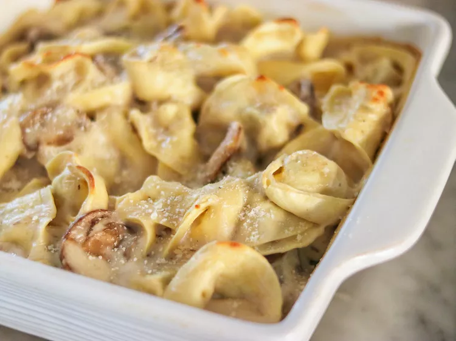

Cheesy Baked Tortellini

Description
Great baked tortellini pasta with super creamy sauce that is wonderful!
Ingredients
- 1 (16 ounce) package cheese tortellini
- 1 tablespoon canola oil
- 1 (8 ounce) package fresh mushrooms, stemmed and sliced
- 2 tablespoons butter
- ¼ cup all-purpose flour
- 2 cups milk
- salt and ground black pepper to taste
- 1 cup grated Parmesan cheese
Steps
- Preheat the oven to 400 degrees F (200 degrees C).
- Fill a large pot with lightly salted water and bring to a rolling boil; stir in tortellini and return to a boil. Cook uncovered, stirring occasionally, until the tortellini float to the top and the filling is hot, 3 to 5 minutes. Drain and place into a 9-inch baking pan.
- Heat canola oil in a large saucepan over medium heat. Add mushrooms and cook until golden brown, 12 to 15 minutes. Stir butter into the pan until melted; stir in flour slowly and cook until golden, about 1 minute. Pour milk slowly into the saucepan, stirring continuously. Reduce heat to medium-low and cook until sauce begins to bubble, 7 to 8 minutes.
- emove saucepan from heat. Season with salt and pepper. Stir in Parmesan cheese. Pour sauce over cooked tortellini in the baking pan.
- Bake in the preheated oven until sauce begins to brown, 20 to 25 minutes. Serve immediately.